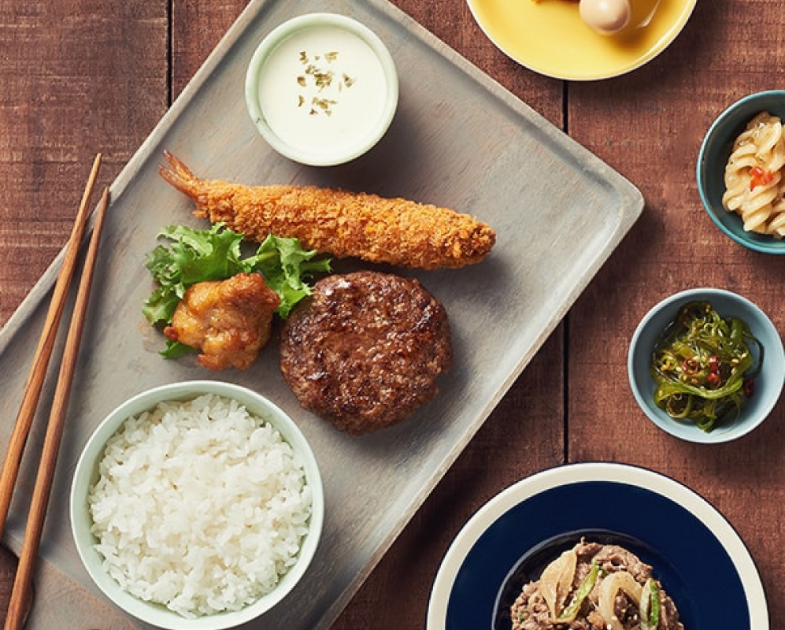
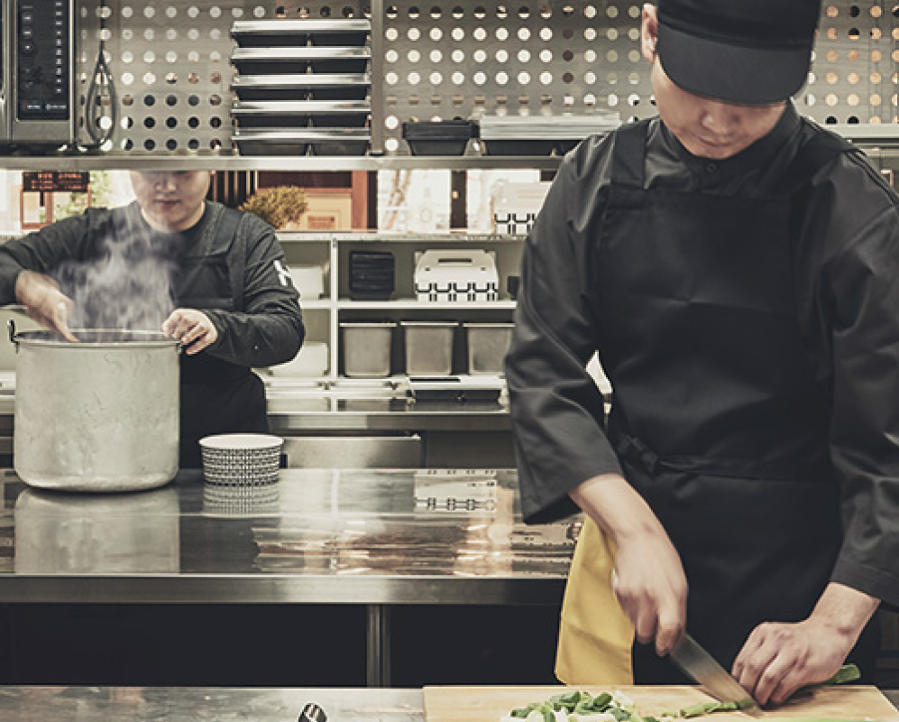
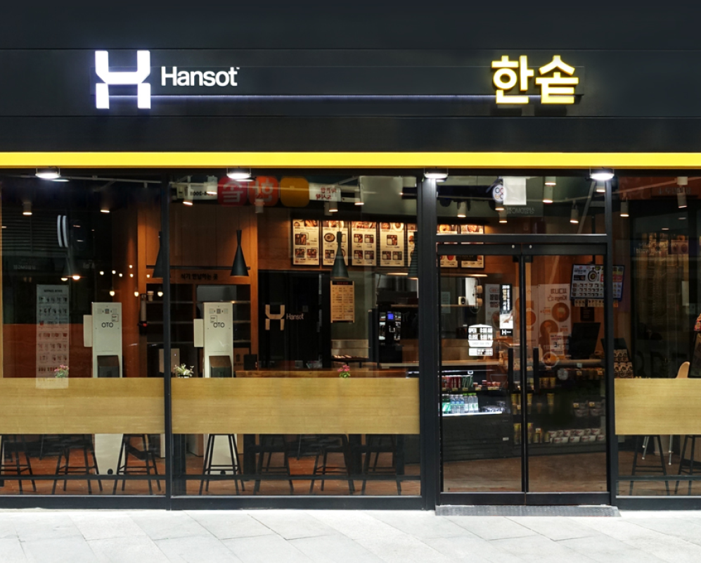

한솥이어야 하는
세가지 이유
-

01
트렌드에
영향을 받지
않습니다
유독 트렌드에 따라 성패를 달리하는 외식업!
한솥은 유행과 상관없이 꾸준히 성과를 내는
스테디셀러 프랜차이즈입니다.
가맹점 중 30%가 넘는 가맹점이
10년 이상 점포를 운영하고 있는 한솥.
한솥은 가족이 대를 이어 진행할 수 있는 사업입니다. -

02
고객과 점주님의
이익을
먼저 생각합니다
언제나 가맹점주의 이익을 우선으로 생각합니다.
안정적인 물류망과 높은 가성비의 식재료를 통해
모든 가맹점주가 만족할 수 있도록 노력합니다.
수많은 가맹점주로부터 한솥은 착하다는 말을 듣는 이유입니다. -

03
투명하고
정직합니다
한솥은 창업 이래 가맹점과 본사의 법적 문제가 단 1건도 없었습니다.
이익을 기준으로 가맹점을 바라보는 본사의 관점이 아닌
신뢰를 기준으로 미래를 함께 하는 부모의 마음으로 임하기 때문입니다.
그것이 한솥의 가맹점이 꾸준히 늘어나는 이유 중 하나입니다.